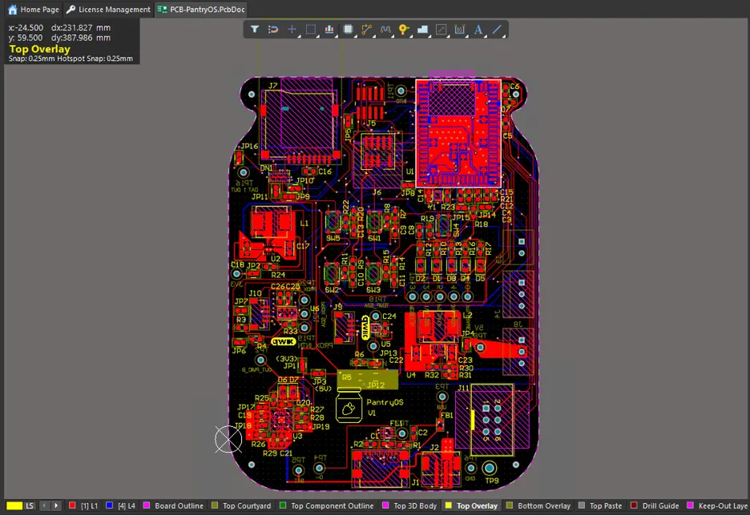
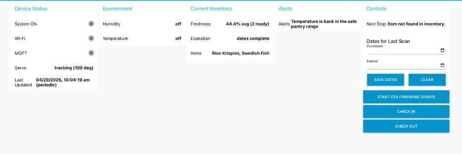

Problem statement
Another one of the requirements for my Integrated Product Design Master’s degree at University of Pennsylvania is to take a class called: Internet of Things, Edge Computing. The final project in this class is to build an integrated circuit board (with a functionality of our choosing) that uses a Silicon Labs MCU (SIWG917Y121MGABA) to measure ambient environmental information and to communicate back and forth with a custom-built internet dashboard (using Microsoft Azure and Node-RED).
At a minimum, each team’s system must use at least one I2C sensor, at least one actuator, and communicate with our computer (going both directions; PCBA to internet and internet to PCBA) using Wi-Fi.
My role
Each team consisted of two students. The intent of our project, which we called PantryOS, was to create a smart pantry assistant that could sense when a user was interacting with the PCBA, collect environmental information like temperature and humidity (and potentially flag an issue if the temperature gets above 25 °C as items in the pantry may spoil), identify grocery items by barcode, accept metadata from an internet dashboard, and then physically represent the freshness of the pantry contents with a servo-driven output. My role centered on the embedded systems and hardware/software integration portions of the project. In practice, this meant I spent much of the semester defining how the board, sensors, actuator, barcode scanner, Wi-Fi stack, MQTT topics, and dashboard all had to behave together so that the final user experience would feel like one coherent product instead of a loose collection of subsystems.
For the first half of the class, my partner and I worked in Altium to design a board schematic and layout that would be compatible with our end goal. We chose components for PCBA layout based on if they were in stock with our PCBA vendor (JLCPCB), we could independently test them using development kits (a common method for proving a component is going to work on a final PCBA layout), the communication protocols required were doable (in our case we used I2C, UART, and PWM), and it met our needs. That is how we settled on the SHT40 temperature/humidity/pressure sensor, the VCNL4040 proximity sensor, the DE2120 barcode scanner, and the SG90 servo/motor. To accomplish this, we set up our board using a BQ chip (helps simultaneously run a system on battery, USB C, or charge the battery while running on USB C) and either supplied power to the PCBA via USB C or a 3.7V Lithium-Ion battery (depending on the state of our battery, our final demonstration used battery mode). Our power section consisted of a 3.3V buck rail, which powered our temperature/humidity sensor, proximity sensor, barcode scanner, and our entire MCU chip. We had a separate 5V boost rail which we used to power our SG90 servo. Separately, we used a Silicon labs debugger board to flash updated code to our MCU, which in turn told the rest of the circuit board what to do. All in all, we had around 200 traces to route in Altium, which we were able to do via our top and bottom layer and occasionally using vias to swap between the layers.
On the software side, my partner and I used a GitHub repository to push and pull code updates so that we could work on making progress in parallel. One of the first things I helped establish was the peripheral architecture around the Silicon Labs SIWG917 MCU. We used the temperature/humidity sensor so that the system could report a real environmental reading from inside the pantry, and the proximity sensor so that the board could detect when a user had opened the pantry or reached toward the system. We also integrated our two-dimensional barcode scanner so that real grocery items could be identified quickly, and our servo so that the system could communicate a visual representation of “freshness” mechanically rather than only through a screen. From an integration standpoint, the challenge was not merely wiring these devices to the board; it was making sure that the chosen buses, pins, and update rates all coexisted with the radio subsystem and with each other. Our final mapping used one I2C bus for the SHT40, a second I2C path (ultra-low power) for the VCNL4040, UART for the scanner, and a dedicated PWM/GPIO output for the servo. A large portion of my contribution was turning those hardware decisions into a firmware and dashboard architecture that could reliably exercise each peripheral under real use conditions. The layout of our final Node-RED dashboard can be seen below in the figure below.

In the C-based embedded code, I helped organize the application around a real time operating system (known as FreeRTOS) rather than writing the project as one large polling loop (often called “bare metal”). We quickly realized that the system had too many asynchronous behaviors for a monolithic structure to remain understandable. The board had to maintain Wi-Fi and MQTT connectivity in the background, monitor the proximity sensor for session start events, sample temperature and humidity while the system was active, receive barcode data over UART whenever a scan occurred, respond to dashboard commands, and move the servo when the pantry freshness changed. To handle that complexity cleanly, I structured the firmware into dedicated tasks for Wi-Fi/MQTT networking, proximity monitoring, temperature/humidity sampling, barcode handling, actuation, and command processing. The heart of the system was a central state-management task. Rather than allowing each hardware task to directly modify the system state, the other tasks produced events and pushed them into queues and event groups. The state-management task then consumed those events and made the authoritative decisions about what the pantry state was. This architecture made it much easier to reason about race conditions, to debug event ordering, and to prevent one subsystem from accidentally breaking another.
I also spent a significant amount of time on the sensor and actuator driver layer. The SHT40 temperature/humidity path required a command-based I2C transaction in which the firmware would trigger a measurement, wait for the conversion, read back the raw bytes, and convert them into engineering units. The VCNL4040 proximity sensor was different because it used a register-based I2C interface with repeated-start behavior and required its own initialization sequence and threshold logic. Typical vendor I2C driver implementations are often blocking, which can slow down a real time operating system, and thus we had to rewrite the drivers for our proximity and temperature humidity sensors to be low-level, interrupt-driven state machines. The barcode scanner integration required a UART receive path that could continuously watch for scans, buffer characters safely, determine when a code had ended, and package the scan into an event that the rest of the application could understand. When a barcode is scanned, it converts the scan into a 12-digit number (most grocery scans produced a UPC-style numeric code that we used to identify the item, which is almost always 12 digits) which tells you what the item is. The servo path had to translate freshness values into stable mechanical positions without jittering or interfering with the rest of the system timing. In other words, I was not only concerned with getting each device to work in isolation; I had to work to make each device behave robustly inside the larger FreeRTOS setup.
A major part of my role was defining the data model that connected the PCBA to the internet dashboard. Early in the project, we experimented with aggregating large amounts of status information into bigger MQTT payloads, but this made the Node-RED interface look messy and made debugging more difficult. I eventually pushed the design toward a much more explicit set of MQTT topics for direct values such as Wi-Fi status, MQTT status, system-on state, temperature, humidity, item list, freshness, expiration, and alert text. This greatly simplified the dashboard and made it easier to see what was happening on the board in real time. I also helped build the command path in the opposite direction. The board could request a one-time time stamp after boot, and the dashboard could send purchase and expiration dates for the most recent barcode scan. This two-way communication was important because the entire PantryOS concept depended on combining local sensing on the board with user-supplied metadata from the internet side of the system.
At the application level, I helped define the actual PantryOS user flow. When the pantry was idle, the board kept track of Wi-Fi and MQTT status but waited for the proximity sensor to detect a user interaction. Once the proximity sensor triggered, the system opened a timed session, turned the dashboard’s System ON indicator green, and began publishing live environmental data. The user could then scan a grocery item with the barcode scanner. That scan created or updated the most recent inventory object in firmware. The dashboard would then prompt the user to enter purchase and expiration dates. Once those dates were applied, the firmware calculated the freshness of that item relative to the current date and folded it into an average freshness metric for the overall pantry inventory. The servo angle was then driven from that freshness metric so that the board itself became a physical indicator of how fresh the pantry contents were. I spent a lot of time iterating on this end-to-end workflow so that the timing felt natural and so that the dashboard and board always agreed on the current state.
The most difficult and most educational part of this project was the debugging and integration work. Because we were building a custom PCB with multiple sensors, Wi-Fi, MQTT, and a dashboard, many problems only appeared when the whole system was running together. I used SEGGER RTT serial print logging heavily to understand what the board thought it was doing at runtime, particularly during Wi-Fi bring-up, MQTT connection attempts, power-cycle behavior, I2C timeouts, and barcode processing. I also repeatedly cross-checked live firmware output against the Node-RED dashboard so that I could distinguish between a real embedded bug and a dashboard presentation issue. For example, some failures that initially looked like sensor problems were actually wiring or bus issues, some failures that looked like firmware issues were really stale dashboard state, and some behaviors that seemed random turned out to be related to how the network stack behaved on power-up versus on a true reset. Working through those issues forced me to think like a systems engineer rather than just a firmware developer.
I also helped with the practical engineering details that make a project reproducible for someone else: updating project metadata, cleaning up pin assignments, making sure the source tree would regenerate cleanly, improving comments and documentation, and writing a much more complete README so that another engineer could understand both the high-level architecture and the actual topic flow between the board and the dashboard. In a class project with only two team members, this kind of cleanup work mattered because there was no separate systems integration team to do it for us.
Finally, I helped validate the system on real hardware rather than treating it as a simulation exercise. We tested the firmware and dashboard flow on multiple boards, repeatedly flashed and re-flashed the system, checked behavior on reset and power cycle, and verified that the main demo path worked from end to end: trigger the system with proximity, observe live environmental updates, scan a barcode, enter dates, update freshness, and confirm that the servo moved to the correct position. This was where the project began to feel like a true integrated product rather than a school assignment, because the final challenge was not any one driver or any one task, but whether the entire board-dashboard-enclosure system behaved intuitively for a user. The final hardware/software integration, including the enclosure, barcode scanner, servo, temperature/humidity sensor, and proximity sensor, can be shown with callouts below in the figure below.

Project outcome
The final output of the class was a demonstration on April 29. We demonstrated our device functionality to our professor, our teaching assistants, and industry professionals from Altium and Silicon Labs. To our teaching assistants, we had to prove that we could flash code to the MCU both through the debugger board and through our dashboard/over Wi-Fi using a method called over the air (OTA) firmware update.
Our demonstration was a resounding success; we got compliments from the professor and even won a 3rd place prize for best project from the Altium representative (out of a total of 40 teams). In the future, our goal is to be able to suggest potential recipes to the user based on what items they currently have in inventory in their pantry, and to warn the user when any item is close to expiring (potentially over email or text).